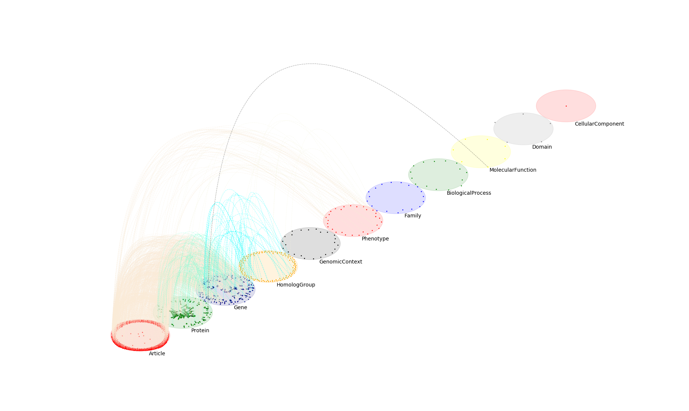

Network visualization¶
This section includes basic examples on network visualization. (datasets are available in the ./datasets folder on the repo home page!)
From hairball to multilayer plots¶
The following example shows minimal usecase for obtaining both types of visualization. For more detailed examples, visit the ./examples folder in the main repo.
1 2 3 4 5 6 7 8 9 10 11 12 13 14 | ## visualization of a simple heterogeneous network
from py3plex.visualization.multilayer import *
from py3plex.visualization.colors import all_color_names,colors_default
from py3plex.core import multinet
## you can try the default visualization options --- this is the simplest option/
## multilayer
multilayer_network = multinet.multi_layer_network().load_network("../datasets/goslim_mirna.gpickle",directed=False, input_type="gpickle_biomine")
multilayer_network.basic_stats() ## check core imports
## a simple hairball plot
multilayer_network.visualize_network(style="hairball")
plt.show()
|
Yields the harball plot:

1 2 3 | ## going full py3plex (default 100 iterations, layout_parameters can carry additional parameters)
multilayer_network.visualize_network(style="diagonal")
plt.show()
|
And the diagonal multilayer layout:
{kind=link}
For more custom visualizations, please consider ./examples/example_multilayer_visualization.py!